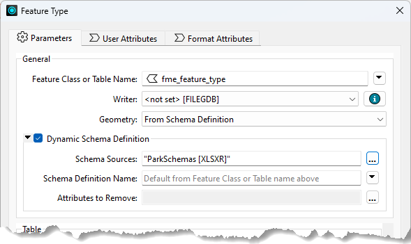
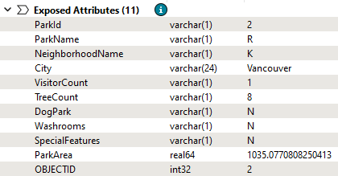

After completing this lesson, you'll be able to:
This section examines attributes and how a workspace author can change the attributes written in a dynamic translation.
Defining attribute names is probably the most complex part of dynamic translations, so let's explain it step by step, revisiting some old ground where necessary.
As we've seen, in a dynamic translation, each incoming feature has an attribute (either fme_feature_type or another attribute) that tells FME which feature type to use when writing the data.
The Schema Sources parameter defines where those feature types exist and uses them to define the attributes and geometry types written to the output.

For example, here we are writing a set of parks data to Esri Geodatabase. We set the output feature type (table) name to the NeighborhoodName attribute.
The writer will obtain the schema from an Excel spreadsheet added as a Resource Reader. If NeighborhoodName = "Strathcona" for a particular feature, the writer looks for a sheet in the Excel spreadsheet file called Strathcona and writes the feature using the same attributes as that table.
However, underneath the Schema Source parameter in this dialog is a setting for the Schema Definition Name. The Schema Definition Name overrides attribute definitions:
For example, the user still specifies NeighborhoodName to provide the feature type to be written but overrides the attributes by saying they must come from a table called Parks.
Interestingly, the feature type specified by NeighborhoodName no longer needs to exist; i.e., the "Strathcona" sheet does not have to exist to get a "Strathcona" feature type in the output Geodatabase. It is enough that the Parks sheet does exist.
In the above example, the Schema Definition Name was a fixed value; i.e., all output feature types got the same attribute definitions. However, the Schema Definition Name can also come from an attribute, meaning one attribute defines the feature type name, and another defines a feature type used to retrieve the attribute schema!
Besides specifying which attribute to use, sometimes - even in a dynamic translation - you need to add or delete specific attributes. This step is easy to do.
Adding a new attribute to all output on a dynamic feature type is just a case of editing the feature type definition to add that attribute:

In other words, any attribute you add to the feature type definition is added to all features output there, regardless of source or resource schemas.
In the example above, the user adds an attribute to store the result of an AreaCalculator transformer in the workspace.
Deleting an existing attribute is done through the dynamic Schema Definition dialog. At the foot of that dialog is a field for removing attributes:

The edit [...] button opens a dialog in which to select or manually enter attributes that are in the source schema but that you don't want in the output:

Here, the user manually enters Country (an attribute from the external schema) to remove it from the output. They also select RefParkId not to be output.
The result of all of the above changes is as follows:

The feature gets various attributes from the Excel schema (the user had to set City manually because the input had no such attribute) and adds ParkArea manually. Country and RefParkId have either been removed or chosen not to appear in the output schema.